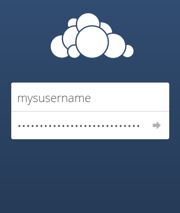

Für alle Nutzer*innen mit einer systemli.org-E-Mail-Adresse bieten wir einen eigenen ownCloud-Service an.
ownCloud ist eine freie Alternative zu Dropbox. Auf https://cloud.systemli.org kannst du Dateien und Ordner ablegen und von verschiedenen Geräten auf diese zugreifen.
Mit der Bereitstellung einer privaten ownCloud, wollen wir euch die Cloud mit all ihren Vorteilen zugänglich machen, ohne dass ihr eure Privatsphäre aufgeben müsst.
Die Login-Daten sind eure E-Mail-Nutzername und euer E-Mail-Passwort, dass ihr zum Abrufen eurer E-Mails verwendet.
